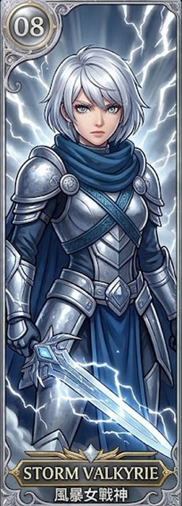
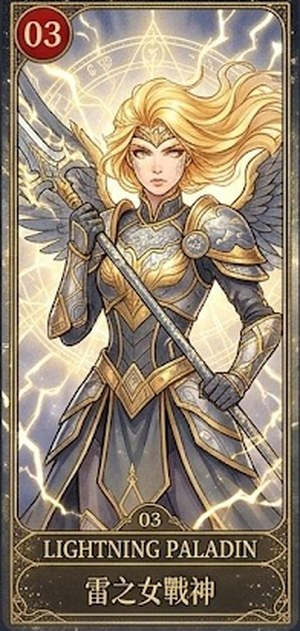
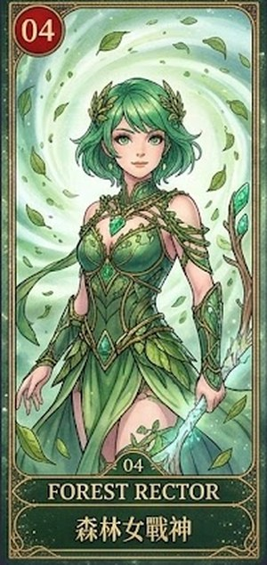

女戰士新圖：放哪一個號碼、哪一個等級？
老師說：先經過老師同意，才能上架。下面是我的建議，綠框 🆕 ＝ 新圖。
| 建議 | 為什麼 |
|---|---|
| 第 3 張（太陽少女戰神…）、第 5 張（太陽女戰神…）➜ ★★ 稀有 | 盔甲、背景比較簡單 |
| 第 2 張（火之女戰神…）、第 4 張（Sunfire Empress…）➜ ★★★ 史詩 | 翅膀、魔法、長袍，比較華麗 |
| 第 1 張（Pyro Valkyrie…，戰鬥背景）➜ ★★★★ 傳說 | 火、水、雷、風、星河整個背景都在爆發，最強 |
| 新號碼 女 32～56 | 原本的號碼不動：已經買了下架那幾張的學生還可以繼續用（老師的決定） |
★ 基本🪙 50


★★ 稀有🪙 150



★★★ 史詩🪙 400・要 Lv 5




★★★★ 傳說🪙 900・要 Lv 10


★★★★★ 神話🪙 2000・要 Lv 20


🔒 下架（商店不賣；已經買的學生還可以繼續用）